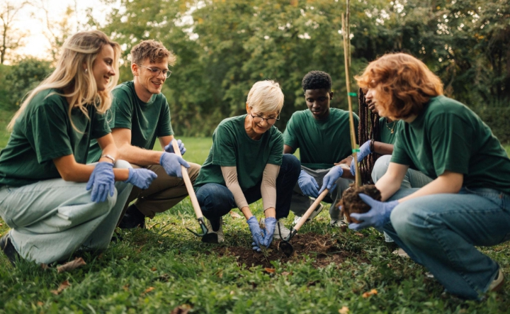

Respect
Respecter le vivant, les écosystèmes et les personnes.
QUI SOMMES-NOUS ?
Green Roots est une association écologique qui encourage chacun à devenir acteur d'un avenir plus durable.


NOTRE HISTOIRE
Green Roots est née d'une conviction : protéger l'environnement ne doit pas être réservé à quelques spécialistes. Chacun peut contribuer, à son échelle, à préserver les ressources naturelles.
Notre association imagine des projets de proximité, organise des actions collectives et partage des informations pour rendre les gestes écologiques plus faciles au quotidien.
CE QUI NOUS GUIDE
Notre manière d'agir repose sur des principes simples, partagés par toute notre communauté.
Respecter le vivant, les écosystèmes et les personnes.
Avancer ensemble et rendre l'action accessible à tous.
Privilégier des gestes concrets et durables.
UNE ÉQUIPE ENGAGÉE
Une équipe fictive présentée pour illustrer l'organisation de l'association.
Coordinatrice
Responsable des projets
Responsable bénévoles